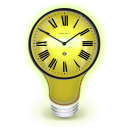
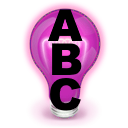

Util-O-Rama
Version Alpha 4.6.0.2α overview
| |
Util-O-Rama Version Alpha 4.6.0.2α overview |
|
Util-O-Rama is a suite of utilities written to manipulate sequence files for Light-O-Rama Showtime version 4.x and xLights.
Util-O-Rama consists of the following programs:
| Split-O-Rama: Allows you to split a Light-O-Rama Showtime S4 sequence. It creates a new sequence from your source sequence containing only the channels you specify. You can save the list of specified channels so that you may split multiple source sequences the same way. | |
| Merge-O-Rama: Allows you to merge some or all channels from 2 different source sequences into a new sequence. It also allows you to save the list of selected channels for additional merges. | |
 |
Map-O-Rama: So say you add a couple channels, or rename some, or re-arrange them in the tracks. The original intended use of Map-O-Rama allows you to remap old sequences and copy all effects to your new layout. This includes remapping the channels from a shared or downloaded sequence which may have a vastly different layout. But it’s pretty versatile about remapping channels so you may find other uses. |
| Select-O-Rama: Allows you to view and edit channel lists used by other Util-O-Rama apps including Split-O-Rama, Merge-O-Rams, Dim-O-Rama, Sparkle-O-Rama and others. All the Util-O-Rama utilities use the same interchangeable format for channel lists except for Map-O-Rama which needs to save channels in pairs. Channel list files (*.chlist) are in comma-separated-values (csv) format and can also be opened in any spreadsheet program. You many need to change the extension from .chlist to .csv in order to do so. | |
 |
Vamp-O-Rama: (aka Vamperizer): Uses the Vamp plugins (ALL of them) to create effects and timing tracks for both Light-O-Rama and xLights sequences. The Vamp-O-Rama program performs a lot of post processing on the output from the Vamp plugins to label, scale, and align the exact times and values. In most cases this will give you better results than the Vamp Plugin tool built into xLights. |
 |
Channel-O-Rama: A database for your AC and DC controller channels. Not really meant for pixels but can be used for them too. |
| Compare-O-Rama: Compares channel names and output addresses between the Channel-O-Rama database, a Light-O-Rama sequence and Visualizer file and your xLights layout, reporting any discrepancies or mismatches. | |
| Dim-O-Rama: Allows you to scale the brightness of selected channels in your LOR sequence, make sure they are either fully on or off (no dimming), or to make sure they stay on or off for a minimum amount of time. Useful for non-conventional lights, projectors, and motorized channels. | |
| Flip-O-Rama: Similar in function to Bob O’s clipboard flipper. Used to ‘flip’ or reverse a bunch of channels in a clipboard file by order and/or time. But will flip either clipboard files or selected channels in a sequence. Unlike Bob O’s, it can flip effects directly within a sequence and can flip effects in non-contiguous channels. | |
| RGB-O-Rama: Global search-and-replace function for RGB colors. | |
| Sparkle-O-Rama: Generates random fades and sparkle effects for selected groups of AC, DC, and RGB channels. | |
|  | Time-O-Rama: Converts Showtime timing grids and/or channels into xLights timing tracks and vise-versa. |
| InfO-Rama: Compiles reports, checks for errors, and generates statistics about Showtime sequences. | |
| Launch-O-Rama: Just a convenient launchpad for the various Util-O-Rama programs- for now. This may get some very simple macro-like or automation abilities to perform a series of operations on a batch of sequences using one Util-O-Rama program, and/or perform a series of operations on a single sequence using multiple Util-O-Rama programs. (Suggestions welcome.) | |
|  | Sort-O-Rama: and xSort: [Future, planned] Sorts the channels in your Showtime and xLights sequences by name or channel number. It only does this within the file’s raw channel data and does NOT affect the order they display in when using Showtime or xLights. (It does not modify track, group, or layout orders) This is intended to help people who manually edit or search the XML in their sequence files. |
 |
Group-O-Rama: [Future, planned] automatically creates channel groups based on certain criteria. Example, grouping channels by controller and output number, or by color, or by keywords in their name. |
Util-O-Rama is not affiliated with or endorsed in any way,
shape, or form by the Light-O-Rama®
Company or the xLights®
Organization. Do NOT contact them for support regarding Util-O-Rama.
Util-O-Rama may create conditions in your sequence files
which Light-O-Rama Showtime or xLights were never written
to handle. If you think you may have found a bug or issue with Light-O-Rama
Showtime or xLights while working on a sequence which has
been created or modified by Util-O-Rama it probably isn't
their fault. Please report the problem to Doctor Wizard and
W⚡zlights software first. Please send questions, suggestions, bug
reports, and good dirty jokes to Doctor Wizard at dev.utilorama at
wizlights dot com or on the GitHub repository issues page here.
Util-O-Rama supports Light-O-Rama Showtime version 4.x. It does NOT support versions 5.x, 6.x and higher. The versions 5 and 6 file format is drastically different, not everything in the files is obvious what it is for, and none of it is documented. I have asked Light-O-Rama several times for information about the version 5 file format and even offered to sign a non-disclosure agreement and they have not replied and completely ignored me. So for now at least, support for version 5 and higher is not planned unless and until I can get proper documentation about the file format. If someone gets me good documentation, I may consider making a version of Util-O-Rama for Showtime v5 and 6.
Util-O-Rama is released as FREE Open-Source Software (FOSS). Most of the utilities and features will work for free for anyone. However by making a donation of $25 or more to the xLights development team, or to any animal-related charity, I will tell you how to access secret undocumented features such as bulk file processing.. Animal charities may be for pets or wild animals and also includes nature reserves. Examples include ASPCA, Humane Society, your local animal shelter, Save the Whales, Audubon society, the Nature Conservancy, and many more.... Sorry, human related charities do not count (other than xLights). Send me a copy of the receipt with any sensitive details blacked out and I will send you updated documentation including the hidden features. Do not block out your name, the date, the amount, or the name of the charity.
For licensing infomation, click here. For privacy policy, click here:
For details on how to download and install Util-O-Rama click here.
For release notes on the current version, click here.
Light-O-Rama and Showtime are registered trademarks of the Light-O-Rama Company.
xLights is a registered trademark of the xLights
Organization.